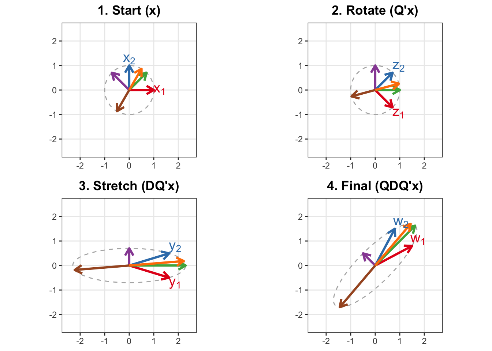

Code
library(ggplot2)
library(gridExtra)
# --- 1. MATRIX SETUP ---
# Symmetric Matrix where eigenvectors are tilted
A <- matrix(c(1.5, 0.8, 0.8, 1.5), nrow = 2)
# Decomposition A = QDQ'
eig <- eigen(A)
Q <- eig$vectors
D_mat <- diag(eig$values)
# --- 2. DEFINE THE 6 VECTORS ---
# 1 & 2: Standard Axes (We will label these x1, x2)
v1 <- c(1, 0)
v2 <- c(0, 1)
# 3 & 4: Eigenvectors
v3 <- Q[,1]
v4 <- Q[,2]
# 5 & 6: Filler vectors at random angles
v5 <- c(cos(pi/3), sin(pi/3))
v6 <- c(cos(4*pi/3), sin(4*pi/3))
# Combine into starting matrix V_start
V_start <- cbind(v1, v2, v3, v4, v5, v6)
# Define 6 Distinct Colors
my_colors <- c("#E41A1C", "#377EB8", "#4DAF4A", "#984EA3", "#FF7F00", "#A65628")
names(my_colors) <- 1:6
# Background Circle Points used for reference path in all plots
theta_c <- seq(0, 2*pi, length.out = 150)
C_start <- rbind(cos(theta_c), sin(theta_c))
# --- 3. DATA PROCESSING HELPER FUNCTION ---
# This function prepares the data frames for ggplot for a given stage
prepare_data <- function(V_mat, C_mat, stage_title, label_text_pair) {
# Prepare Vectors data frame
df_v <- data.frame(t(V_mat))
colnames(df_v) <- c("x", "y")
df_v$vec_id <- factor(1:6) # Unique ID for coloring
# Add labels only for vector 1 and 2
df_v$label <- ""
df_v$label[1] <- label_text_pair[1]
df_v$label[2] <- label_text_pair[2]
# Calculate nudge for labels based on vector direction so they don't overlap arrow tip
df_v$nudge_x <- sign(df_v$x) * 0.25
df_v$nudge_y <- sign(df_v$y) * 0.25
# Don't nudge unlabelled vectors
df_v$nudge_x[3:6] <- 0
df_v$nudge_y[3:6] <- 0
# Prepare Background Path data frame
df_c <- data.frame(t(C_mat))
colnames(df_c) <- c("px", "py")
list(vecs = df_v, path = df_c, title = stage_title)
}
# --- 4. PERFORM TRANSFORMATIONS ---
# Stage 1: Start (x)
d1 <- prepare_data(V_start, C_start,
"1. Start (x)", c("x[1]", "x[2]"))
# Stage 2: Rotate (Q'x)
V2 <- t(Q) %*% V_start
C2 <- t(Q) %*% C_start
d2 <- prepare_data(V2, C2,
"2. Rotate (Q'x)", c("z[1]", "z[2]"))
# Stage 3: Stretch (DQ'x)
V3 <- D_mat %*% V2
C3 <- D_mat %*% C2
d3 <- prepare_data(V3, C3,
"3. Stretch (DQ'x)", c("y[1]", "y[2]"))
# Stage 4: Rotate Back (QDQ'x)
V4 <- Q %*% V3
C4 <- Q %*% C3
d4 <- prepare_data(V4, C4,
"4. Final (QDQ'x)", c("w[1]", "w[2]"))
# --- 5. PLOTTING FUNCTION ---
plot_stage_final <- function(data_list) {
ggplot() +
# Background path (gray dashed)
geom_path(data = data_list$path, aes(x=px, y=py),
color="gray70", linetype="dashed") +
# The 6 vectors
geom_segment(data = data_list$vecs, aes(x=0, y=0, xend=x, yend=y, color=vec_id),
arrow = arrow(length = unit(0.3, "cm")), size=1.1) +
# The labels for v1 and v2 using parsed expressions for subscripts
geom_text(data = data_list$vecs, aes(x=x, y=y, label=label, color=vec_id),
parse = TRUE, fontface="bold", size=5,
nudge_x = data_list$vecs$nudge_x,
nudge_y = data_list$vecs$nudge_y) +
scale_color_manual(values = my_colors) +
# Fixed coordinates to ensure realistic rotation/stretching view
coord_fixed(xlim = c(-2.5, 2.5), ylim = c(-2.5, 2.5)) +
theme_bw() +
theme(legend.position = "none",
panel.grid.minor = element_blank(),
plot.title = element_text(face="bold", hjust=0.5),
axis.title = element_blank()) +
labs(title = data_list$title)
}
# Generate the 4 plots
p1 <- plot_stage_final(d1)
p2 <- plot_stage_final(d2)
p3 <- plot_stage_final(d3)
p4 <- plot_stage_final(d4)
# Arrange them in a grid
grid.arrange(p1, p2, p3, p4, nrow = 2)
